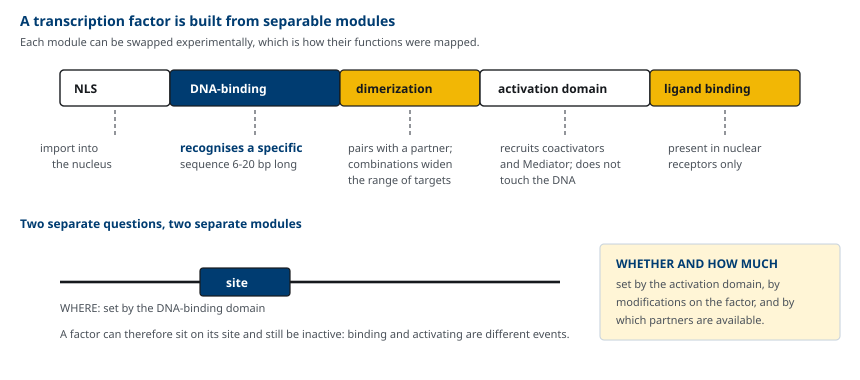
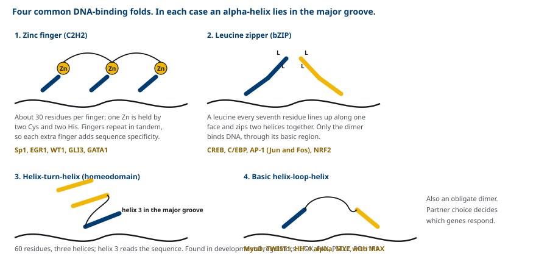
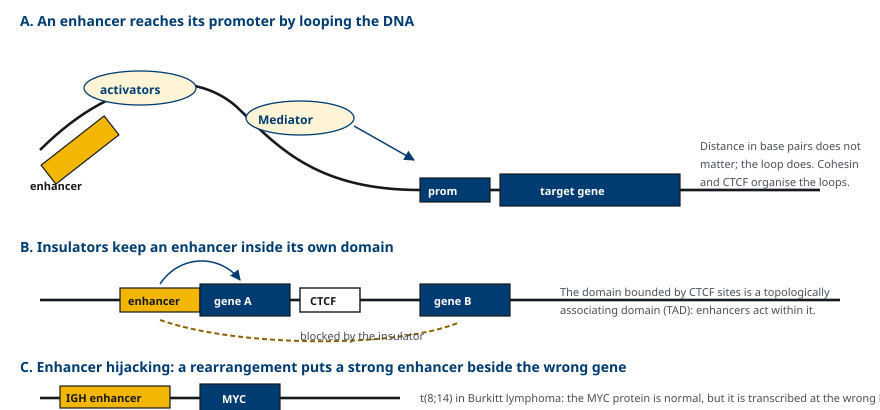
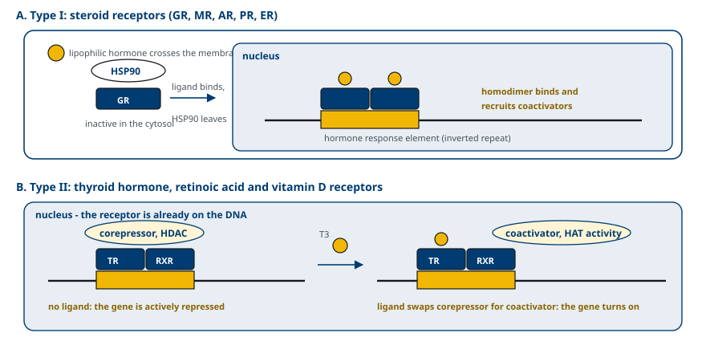
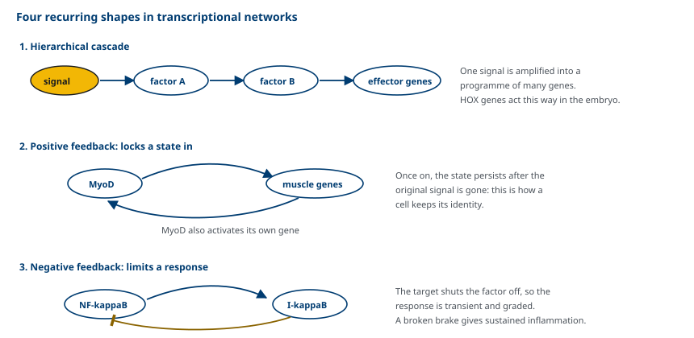
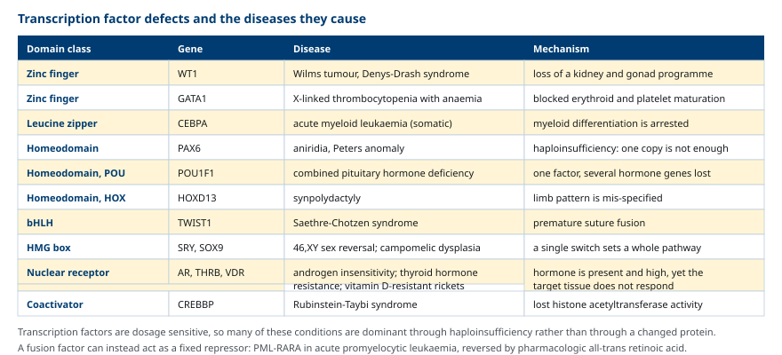

M03-W04-L03 · 분자유전학과 계통별 의학생화학특론
전사인자·enhancer와 조절 네트워크
Transcription Factors, Enhancers and Regulatory Networks
학습목표
- 전사인자의 모듈 구조를 설명하고 DNA 결합과 활성화가 별개의 사건인 이유를 설명한다.
- Zinc finger, leucine zipper, helix-turn-helix, helix-loop-helix 도메인의 구조와 대표 인자를 구분한다.
- Enhancer, silencer, insulator의 작동 방식을 DNA 고리와 TAD의 개념으로 설명한다.
- Coactivator, corepressor, mediator가 전사인자와 RNA polymerase II를 연결하는 방식을 설명한다.
- Type I과 type II 핵수용체의 작용 기전을 비교하고 각각의 임상적 예를 든다.
- 조절 네트워크의 되먹임 구조가 세포 정체성과 발생에 쓰이는 방식을 설명한다.
- 전사인자 이상이 만드는 질환을 기전별로 분류하고 전사를 표적으로 하는 치료를 설명한다.
선수지식
- M03-W04-L02 유전자 발현 조절의 원리와 조절 단위 — promoter 구성, 반응 요소, chromatin 수준의 조절
- M03-W04-L01 번역 후 수정과 단백질 분해 — 인산화와 ubiquitination에 의한 조절
- M02-W09-L02 Cholesterol과 steroid 대사 — steroid 호르몬의 합성과 SREBP 경로
강의 구성
- 1. 전사인자의 정의와 모듈 구조
- 2. DNA 결합 도메인의 유형
- 3. Enhancer, silencer와 염색체 고리
- 4. Coactivator, corepressor와 mediator
- 5. 핵수용체 — steroid와 thyroid hormone
- 6. 조절 네트워크의 구조
- 7. 전사인자 이상이 만드는 질환
- 8. 전사를 표적으로 하는 치료
1. 전사인자의 정의와 모듈 구조
전사인자(transcription factor)는 DNA의 특정 서열에 결합해 그 유전자의 전사량을 바꾸는 단백질이다. 사람 유전체에는 전사인자 유전자가 1,500개 이상 있어 단일 기능 분류 중 가장 큰 집단을 이룬다.
전사인자의 가장 중요한 구조적 특징은 기능이 서로 다른 영역에 나뉘어 있다는 점이다.
- DNA 결합 도메인: 6~20 염기쌍의 특정 서열을 인식한다. 어디에 작용할지를 정한다.
- 활성화 도메인(또는 억제 도메인): DNA에 직접 닿지 않고 다른 단백질을 불러들인다. 얼마나 작용할지를 정한다.
- 이합체화 도메인: 다른 전사인자와 짝을 이룬다. 짝의 조합이 표적 서열과 활성을 바꾼다.
- 핵 이행 신호(NLS): 핵으로 들어가는 데 필요하다.
- 리간드 결합 도메인: 핵수용체에만 있다.

이 구조에서 중요한 결론이 나온다. 전사인자가 DNA에 결합해 있다는 것이 그 유전자가 켜져 있다는 뜻은 아니다. 결합한 상태에서 활성화 도메인이 인산화되어야 작동하는 인자가 있고, 리간드가 없으면 오히려 억제하는 인자도 있다. 즉 결합과 활성화는 별개의 사건이다.
조절되는 지점도 여러 곳이다. 전사인자 자체의 양(전사와 분해), 세포 내 위치(핵과 세포질 사이의 이동), 수정 상태(인산화, acetylation), 짝 단백질의 가용성, 억제 단백질과의 결합이 모두 전사인자의 활성을 바꾼다.
2. DNA 결합 도메인의 유형
DNA 결합 도메인은 접힘 방식에 따라 몇 가지 유형으로 나뉜다. 유형이 다르지만 공통점이 있다. 대부분 α-helix 하나를 DNA의 major groove에 끼워 넣어 염기와 직접 수소결합을 형성한다.
(1) Zinc finger Cysteine 2개와 histidine 2개가 Zn²⁺ 하나를 붙잡아 약 30개 아미노산의 작은 구조 단위를 만든다. 이 단위가 여러 개 연달아 반복되고, finger 수가 늘면 인식하는 서열이 길어져 특이성이 높아진다. Sp1, EGR1, WT1, GLI3, GATA1이 이 유형이다. 핵수용체의 DNA 결합 도메인도 cysteine 4개가 Zn을 붙잡는 변형된 zinc finger다.
(2) Leucine zipper(bZIP) 일곱 번째 잔기마다 leucine이 놓여 α-helix의 한쪽 면에 일렬로 늘어서고, 두 helix가 그 면을 맞대 꼬여 이합체를 만든다. 이합체가 되어야 그 옆의 염기성 영역이 DNA에 결합한다. 즉 이합체화가 DNA 결합의 전제 조건이다. CREB, C/EBP, AP-1(Jun과 Fos의 이합체), NRF2가 이 유형이다.
(3) Helix-turn-helix와 homeodomain 세 개의 helix로 이루어진 약 60개 아미노산의 도메인으로, 세 번째 helix가 major groove에 들어가 서열을 읽는다. 발생 조절 인자에 압도적으로 많다. HOX 유전자군, PAX 계열, PITX2, POU1F1이 이 유형이다.
(4) Basic helix-loop-helix(bHLH) 두 helix가 고리로 이어진 구조로, leucine zipper처럼 이합체를 이룬 뒤 DNA에 결합한다. MyoD, TWIST1, HIF-1α, MYC(MAX와 이합체)이 이 유형이다.
(5) HMG box DNA의 minor groove에 끼어 들어 DNA를 크게 휘게 만든다. 다른 단백질이 모일 수 있게 DNA 구조를 바꾸는 역할도 한다. SRY, SOX9, TCF/LEF가 이 유형이다.

| 도메인 | 이합체 필요 | 구조적 특징 | 대표 인자 | 관련 질환 |
|---|---|---|---|---|
| Zinc finger | 아니오 | Zn 배위, 반복 단위 | Sp1, WT1, GATA1 | Wilms tumor, X 연관 혈소판감소증 |
| Leucine zipper | 예 | 7잔기 주기의 leucine | CREB, C/EBP, AP-1 | 급성 골수백혈병(CEBPA) |
| Homeodomain | 아니오(일부 예) | helix 3이 서열을 읽음 | HOX, PAX6, POU1F1 | 무홍채증, 복합 뇌하수체 호르몬 결핍 |
| bHLH | 예 | 짝에 따라 표적이 달라짐 | MyoD, TWIST1, HIF-1α | Saethre-Chotzen 증후군 |
| HMG box | 아니오 | minor groove, DNA 굽힘 | SRY, SOX9 | 46,XY 성발달 이상, campomelic dysplasia |
이합체화가 필요한 유형에서는 짝의 조합이 조절의 또 다른 층이 된다. AP-1은 Jun과 Fos의 조합에 따라 결합 서열의 선호와 활성이 달라지고, MYC은 MAX와 짝을 이룰 때만 작동하므로 MAX의 양이 MYC의 작용을 제한한다.
3. Enhancer, silencer와 염색체 고리
앞 수업에서 enhancer가 위치와 방향에 비교적 자유롭다는 사실을 보았다. 이 절에서는 그것이 어떻게 가능한지를 본다.
Enhancer는 전사인자 결합 부위가 여러 개 모여 있는 짧은 DNA 구간이다. 여기 모인 전사인자들이 하나의 복합체를 이루어 coactivator와 mediator를 끌어들이고, DNA가 고리를 이루어 enhancer와 promoter가 물리적으로 가까워진다. 수십 kb에서 1 Mb 떨어진 enhancer가 작동하는 이유가 이 고리에 있다. 고리의 형성은 cohesin과 CTCF가 조직한다.

Enhancer의 작동 범위는 무제한이 아니다. Insulator(CTCF 결합 부위)가 경계를 만들어 enhancer의 영향이 이웃 영역으로 넘어가지 못하게 한다. Insulator로 둘러싸인 구역을 TAD(topologically associating domain)라 하고, enhancer는 원칙적으로 같은 TAD 안의 promoter에만 작용한다.
이 구조가 임상적으로 중요한 두 가지 결과를 만든다.
- 조절 서열의 변이가 암호 서열의 변이처럼 질환을 만든다. *SHH*의 사지 발달용 enhancer는 다른 유전자의 intron 안, *SHH*로부터 약 1 Mb 떨어진 곳에 있다. 이 enhancer의 단일염기 변이가 축전성 다지증(preaxial polydactyly)을 일으킨다. 유전체 검사에서 암호 영역만 보면 원인을 찾을 수 없다.
- 염색체 재배열이 enhancer를 엉뚱한 유전자에 연결한다(enhancer hijacking). Burkitt lymphoma의 t(8;14)는 *MYC*을 immunoglobulin 중쇄 유전자좌의 강력한 enhancer 옆으로 옮긴다. T세포 급성 림프구성 백혈병에서 TAL1 상류에 생기는 변이는 새 enhancer를 만들어 *TAL1*을 비정상적으로 켠다. 단백질은 정상인데 발현의 양과 시점이 틀려 종양이 된다.
Silencer는 억제 인자가 결합하는 서열로, 같은 고리 구조를 통해 promoter에 억제 신호를 전달한다. 종양에서 흔히 보이는 super-enhancer는 enhancer가 여러 개 밀집해 특정 유전자를 매우 강하게 켜는 구간이다.
4. Coactivator, corepressor와 mediator
전사인자의 활성화 도메인은 DNA에 결합한 뒤 다른 단백질을 불러들여 작용한다. 불려오는 단백질이 세 부류다.
(1) Coactivator 전사인자와 전사 기구 사이를 잇고, 많은 경우 chromatin을 바꾸는 효소 활성을 함께 가진다. 대표적인 것이 CBP/p300이다. CBP/p300은 histone acetyltransferase 활성을 가지므로, 전사인자가 이것을 불러오면 그 자리의 chromatin이 느슨해지고 전사가 쉬워진다. 앞 수업의 chromatin 수준 조절과 전사인자가 여기서 만난다. SRC/p160 계열도 핵수용체의 coactivator로 작용한다.
(2) Corepressor NCoR와 SMRT가 대표적이고, HDAC 복합체를 불러들여 chromatin을 조밀하게 만든다. 억제가 단순히 "활성화가 없는 상태"가 아니라 능동적인 과정이라는 점이 중요하다.
(3) Mediator 26개 이상의 소단위로 이루어진 큰 복합체로, enhancer에 모인 전사인자와 promoter의 RNA polymerase II를 물리적으로 연결한다. Mediator가 없으면 아무리 많은 전사인자가 enhancer에 모여도 신호가 전사 기구에 전달되지 않는다.
5. 핵수용체 — steroid와 thyroid hormone
핵수용체는 지용성 리간드가 결합하면 전사인자로 작동하는 단백질군이다. 사람에게 약 48종이 있고, 구조는 N 말단의 활성화 영역, 중앙의 zinc finger형 DNA 결합 도메인, C 말단의 리간드 결합 도메인으로 공통된다. 작동 방식은 두 부류로 갈린다.
Type I — steroid 수용체 Glucocorticoid 수용체(GR), mineralocorticoid 수용체(MR), androgen 수용체(AR), progesterone 수용체(PR), estrogen 수용체(ER)가 해당한다.
1. 리간드가 없을 때는 세포질에서 HSP90 등과 복합체를 이루어 비활성 상태로 붙잡혀 있다. 2. 지용성 호르몬이 세포막을 통과해 결합하면 HSP90이 떨어지고 수용체가 동종이합체를 만든다. 3. 핵으로 들어가 hormone response element(역방향 반복 서열)에 결합하고 coactivator를 불러들인다.
Type II — thyroid hormone, retinoid, vitamin D 수용체 Thyroid hormone 수용체(TR), retinoic acid 수용체(RAR), vitamin D 수용체(VDR), PPAR이 해당한다.
1. 리간드가 없어도 이미 핵 안의 DNA에 결합해 있다. 보통 RXR과 이종이합체를 이룬다. 2. 리간드가 없는 상태에서는 corepressor를 붙잡아 표적 유전자를 능동적으로 억제한다. 3. 리간드가 결합하면 리간드 결합 도메인의 구조가 바뀌어 corepressor가 떨어지고 coactivator가 붙어 억제가 활성화로 전환된다.

| 항목 | Type I (steroid) | Type II (thyroid, retinoid, vitamin D) |
|---|---|---|
| 리간드 없을 때 위치 | 세포질, HSP90과 복합체 | 핵, DNA에 결합 |
| 이합체 | 동종이합체 | RXR과 이종이합체 |
| 리간드 없을 때의 작용 | 없음 | corepressor를 통한 능동적 억제 |
| 반응 요소 | 역방향 반복 | 직접 반복 |
| 대표 수용체 | GR, MR, AR, PR, ER | TR, RAR, VDR, PPAR |
6. 조절 네트워크의 구조
전사인자는 혼자 작동하지 않는다. 전사인자가 다른 전사인자의 유전자를 조절하므로, 전체는 네트워크를 이룬다. 네트워크에는 반복적으로 나타나는 구조가 있다.

(1) 계층적 연쇄 하나의 신호가 상위 전사인자를 켜고, 그 인자가 하위 전사인자를 켜고, 하위 인자가 효과 유전자를 켠다. 발생 과정이 이 구조로 되어 있고, HOX 유전자군이 대표적이다. HOX 유전자는 염색체상의 배열 순서가 몸의 전후축 발현 순서와 대응하며(colinearity), 상위에서 받은 위치 정보를 하위 유전자군으로 전달한다.
(2) 양성 되먹임 전사인자가 자기 자신의 유전자를 활성화하면, 신호가 사라진 뒤에도 상태가 유지된다. MyoD가 근육 유전자군과 자기 자신을 함께 켜는 것이 그 예다. 이 구조가 세포 정체성의 생화학적 근거다. 한 번 근육세포가 되면 계속 근육세포로 남는 것은 유전체가 바뀌어서가 아니라 이 회로가 켜진 상태로 고정되기 때문이다.
(3) 음성 되먹임 표적 유전자의 산물이 전사인자를 억제한다. NF-κB가 자신의 억제자 IκB를 유도하는 회로가 대표적이다. 이 구조는 반응을 일시적이고 정도가 조절되는 것으로 만든다. 브레이크가 망가지면 염증이 지속된다.
(4) 주조절자(master regulator) 네트워크의 상위에 있어 그것 하나로 세포의 프로그램 전체를 바꿀 수 있는 인자다. MyoD를 섬유아세포에 발현시키면 근육세포의 형질이 나타난다. 이 원리를 확장한 것이 역분화 줄기세포(iPSC)다. OCT4, SOX2, KLF4, MYC 네 전사인자를 체세포에 도입하면 다능성 상태로 되돌아간다. 전사인자의 조합이 세포의 정체성을 정한다는 사실의 직접적 증명이다.
성발달이 같은 논리의 임상적 예다. Y 염색체의 *SRY*가 발현되면 HMG box 전사인자가 *SOX9*을 켜고, 이것이 Sertoli 세포 분화와 정소 발생 프로그램을 작동시킨다. SRY는 작은 전사인자 하나지만 네트워크의 최상위에 있으므로 그 변이가 성 발달 전체를 바꾼다.
7. 전사인자 이상이 만드는 질환
전사인자 유전자의 변이가 질환을 만드는 방식은 몇 가지로 분류된다. 분류가 유전 양식과 표현형의 폭을 설명한다.

- Haploinsufficiency(용량 부족): 전사인자는 작용에 일정 농도가 필요하므로 한 대립유전자만 망가져도 부족해진다. 그래서 전사인자 질환은 상염색체 우성이 많다. PAX6 이형접합 변이에 의한 무홍채증이 그 예다.
- 우성 음성(dominant negative): 변이 단백질이 정상 단백질과 이합체를 이루거나 결합 부위를 차지해 정상 기능을 방해한다. 이합체를 이루는 도메인 유형에서 특히 흔하다.
- 융합 단백질에 의한 기능 전환: 염색체 전위로 만들어진 융합 전사인자가 본래와 다른 작용을 한다. PML-RARA, EWSR1-FLI1(Ewing sarcoma)이 그 예다.
- 발현 조절 서열의 이상: 전사인자 유전자는 정상인데 조절 영역의 변이나 enhancer 탈취로 발현량과 발현 시점이 바뀐다.
- 수용체 저항: 핵수용체의 리간드 결합이나 DNA 결합이 손상되어 호르몬에 반응하지 않는다.
한 가지 패턴이 반복된다. 네트워크의 상위에 있는 인자일수록 결함의 표현형이 넓고 여러 기관에 걸친다. POU1F1 하나의 결함으로 growth hormone, prolactin, TSH가 함께 부족해지는 복합 뇌하수체 호르몬 결핍이 그 예다. 반대로 하위의 효과 유전자 결함은 단일 기능의 상실로 나타난다. 임상에서 여러 기관에 걸친 선천성 이상의 조합을 볼 때 상위 조절 인자의 결함을 의심하는 근거가 여기에 있다.
8. 전사를 표적으로 하는 치료
전사 단계는 약물 표적으로서 오랫동안 접근하기 어려운 영역이었다. 전사인자에는 효소의 활성 부위 같은 작은 결합 주머니가 없는 경우가 많기 때문이다. 그러나 몇 가지 경로로 접근이 이루어지고 있다.
| 접근 | 표적 | 예 | 작용 원리 |
|---|---|---|---|
| 리간드 결합 부위 이용 | 핵수용체 | Tamoxifen, enzalutamide, glucocorticoid, thiazolidinedione | 리간드 주머니가 이미 존재한다 |
| Corepressor 교체 유도 | PML-RARA | All-trans retinoic acid, arsenic trioxide | 억제를 활성화로 되돌린다 |
| Chromatin 효소 억제 | HDAC, DNMT, EZH2 | Vorinostat, azacitidine, tazemetostat | 전사인자 대신 그 환경을 바꾼다 |
| Coactivator 결합 차단 | BET 단백질 | BET 억제제(개발 중) | 전사인자와 chromatin의 연결을 끊는다 |
| 전사인자 분해 유도 | 전사인자 자체 | Lenalidomide 계열, 분해 유도 약물 | E3 ligase의 기질로 만든다 |
| 조절 서열 편집 | Enhancer | BCL11A 적혈구 enhancer 편집 | 발현 양상을 되돌린다 |
마지막 항목이 이 수업 내용의 임상적 귀결이다. *BCL11A*는 태아형 hemoglobin 유전자 *HBG*를 억제하는 전사인자다. 이 유전자를 전신에서 없애면 다른 기능까지 손상되지만, 적혈구 계열에서만 작동하는 enhancer를 끊으면 적혈구에서만 BCL11A가 줄어 태아형 hemoglobin이 늘어난다. 이 방식으로 sickle cell disease와 β-thalassemia를 치료하는 유전자 편집 요법이 승인되었다. 표적이 단백질 암호 서열이 아니라 조절 서열이고, 조직 특이성을 enhancer의 조직 특이성에서 가져온다는 점이 이 치료의 설계 논리다.
확인 문항
어떤 전사인자가 표적 유전자의 promoter에 결합한 상태로 확인되었는데 그 유전자는 전사되지 않았다. 모순이 아닌 이유를 전사인자의 구조로 설명하라.
해설
전사인자는 기능이 분리된 모듈 구조를 가진다. DNA 결합 도메인은 어디에 붙을지를 정할 뿐이고, 전사가 실제로 늘어나려면 활성화 도메인이 coactivator와 mediator를 불러들여야 한다. 활성화 도메인이 인산화되지 않았거나, 필요한 coactivator가 없거나, 억제 단백질이 활성화 도메인을 가리고 있거나, 리간드가 없는 핵수용체처럼 corepressor를 붙잡고 있으면 결합한 채로 전사를 억제할 수도 있다. 따라서 결합과 활성화는 서로 다른 사건이고, 결합 자료만으로 발현 여부를 판단할 수 없다.
Leucine zipper와 bHLH 도메인을 가진 전사인자는 반드시 이합체를 이루어야 DNA에 결합한다. 이 성질이 조절에 주는 이점과, 질환에서 어떤 결과를 낳는지 설명하라.
해설
이점은 조합에 의한 다양성이다. 같은 단백질이 어떤 짝과 결합하는지에 따라 인식하는 서열과 활성이 달라지므로, 제한된 수의 전사인자로 많은 조합을 만들 수 있고 짝의 양을 조절하는 것만으로 활성을 바꿀 수 있다. MYC이 MAX와만 작동하므로 MAX의 양이 MYC의 작용을 제한하는 것이 그 예다. 질환에서의 결과는 우성 음성 효과다. 변이 단백질이 정상 단백질과 이합체를 이루면 기능하지 않는 이합체가 생겨 정상 대립유전자의 산물까지 무력화되므로, 이형접합 상태에서 기능이 절반보다 더 크게 떨어진다.
Thyroid hormone 수용체와 glucocorticoid 수용체는 작동 방식이 다르다. 리간드가 없는 상태에서 각 수용체가 무엇을 하고 있는지를 비교하고, 그 차이가 어떤 임상적 결과를 만드는지 적으라.
해설
Glucocorticoid 수용체는 type I으로, 리간드가 없으면 세포질에서 HSP90과 복합체를 이루어 붙잡혀 있고 표적 유전자에는 아무 작용도 하지 않는다. Thyroid hormone 수용체는 type II로, 리간드가 없어도 RXR과 이종이합체를 이루어 이미 DNA에 결합해 있으며 corepressor와 HDAC를 붙잡아 표적 유전자를 능동적으로 억제한다. 임상적 결과는 리간드가 없을 때의 기저 상태가 다르다는 점이다. Thyroid hormone이 부족하면 단순히 활성화가 없는 것이 아니라 억제가 유지되므로 표적 유전자의 발현이 기저 이하로 떨어진다. 또 리간드 결합이 손상된 변이 수용체는 DNA에 붙어 억제만 계속하므로 우성 음성으로 작용해, THRB 변이에 의한 thyroid hormone 저항 증후군이 우성으로 유전된다.
급성 전골수세포성 백혈병에서 all-trans retinoic acid가 세포독성 항암제와 다른 방식으로 작용하는 이유를 PML-RARA 융합 단백질의 성질로 설명하라.
해설
t(15;17)로 생긴 PML-RARA 융합 단백질은 정상 RARα보다 corepressor를 훨씬 강하게 붙잡아, 생리적 농도의 retinoic acid로는 corepressor가 떨어지지 않는다. 그 결과 과립세포 분화에 필요한 유전자군이 지속적으로 억제되어 전골수세포 단계에서 분화가 멈춘다. 약리 용량의 all-trans retinoic acid를 투여하면 리간드 결합 도메인의 구조 변화가 충분히 일어나 corepressor가 떨어지고 coactivator로 교체되며, 억제된 전사 프로그램이 재개되어 세포가 분화한다. 세포를 죽이는 것이 아니라 전사 상태를 되돌리는 치료이므로 분화 유도 치료라 부른다.
어떤 환자에서 다지증이 가족 내에 우성으로 유전되는데, 전체 exome 검사에서 원인 변이를 찾지 못했다. 다음에 무엇을 확인해야 하는가. 근거를 함께 적으라.
해설
암호 영역 밖의 조절 서열, 특히 enhancer를 확인해야 한다. *SHH*의 사지 발달용 enhancer는 SHH 자체에서 약 1 Mb 떨어진 다른 유전자의 intron 안에 있고, 이 enhancer의 단일염기 변이가 축전성 다지증을 일으킨다. Exome 검사는 암호 영역만 읽으므로 이런 변이를 볼 수 없다. 따라서 전장유전체 검사로 알려진 발달 enhancer 영역을 확인하고, 동시에 구조 변이와 TAD 경계의 파괴 여부도 평가해야 한다. CTCF 경계가 깨지면 이웃 영역의 enhancer가 엉뚱한 유전자에 작용할 수 있기 때문이다.
전사인자 유전자의 질환이 상염색체 우성으로 유전되는 경우가 많은 이유를 설명하라.
해설
전사인자는 작용에 일정한 농도가 필요한 용량 민감 단백질이다. 표적 서열에 결합해 coactivator와 mediator를 모으는 과정이 농도에 의존하므로, 두 대립유전자 중 하나만 기능을 잃어 산물이 절반으로 줄어도 발생 과정에서 요구되는 역치에 미치지 못할 수 있다(haploinsufficiency). 또 이합체를 이루는 전사인자에서는 변이 단백질이 정상 단백질과 결합해 기능하지 않는 이합체를 만들어 정상 산물까지 무력화하므로(우성 음성), 효과가 절반보다 더 커진다. 두 기전 모두 이형접합 상태에서 표현형을 만들기 때문에 우성 유전이 흔하다.
한 환자에서 growth hormone, prolactin, TSH가 모두 부족하고 다른 뇌하수체 호르몬은 정상이었다. 어느 수준의 결함을 의심하고, 그 추론의 일반 원칙을 적으라.
해설
세 호르몬 유전자를 함께 조절하는 상위 전사인자의 결함을 의심한다. POU1F1(PIT1)은 somatotroph, lactotroph, thyrotroph의 분화와 해당 호르몬 유전자의 발현에 필요한 homeodomain 전사인자이므로, 이 유전자의 변이는 세 호르몬의 복합 결핍을 만든다. 일반 원칙은 다음과 같다. 서로 다른 유전자의 산물이 함께 부족하면 각각의 유전자가 모두 망가졌다고 보기보다 그 유전자들을 함께 조절하는 상위 인자나 공유 조절 서열의 결함을 먼저 생각한다. 표현형의 폭은 결함이 네트워크의 어느 층에 있는지를 반영한다.
Sickle cell disease 치료에서 BCL11A 유전자 자체를 없애는 대신 적혈구 계열의 enhancer만 편집하는 이유를 설명하라.
해설
BCL11A는 태아형 hemoglobin 유전자 *HBG*를 억제하는 전사인자이므로 이것을 줄이면 태아형 hemoglobin이 늘어 HbS의 중합이 억제된다. 그러나 BCL11A는 적혈구 계열 외에 신경 발달과 림프구 발생에도 필요하므로 유전자 자체를 없애면 다른 기능이 손상된다. *BCL11A*의 적혈구 특이 enhancer를 끊으면 적혈구 계열에서만 발현이 줄고 다른 조직에서는 유지되므로, 치료 효과만 얻고 전신 영향을 피할 수 있다. 조직 특이성을 약물의 전달 방식이 아니라 enhancer 자체의 조직 특이성에서 가져오는 설계다.
참고문헌
- Ferrier DR (ed). Lippincott Illustrated Reviews: Biochemistry. Chapter 33, Regulation of Gene Expression.
- Lambert SA et al. The human transcription factors. Cell 2018;172:650–665.
- Spitz F, Furlong EEM. Transcription factors: from enhancer binding to developmental control. Nat Rev Genet 2012;13:613–626.
- Lee TI, Young RA. Transcriptional regulation and its misregulation in disease. Cell 2013;152:1237–1251.
- Mangelsdorf DJ et al. The nuclear receptor superfamily: the second decade. Cell 1995;83:835–839.
- de Thé H. Differentiation therapy revisited. Nat Rev Cancer 2018;18:117–127.
- Lupiáñez DG et al. Disruptions of topological chromatin domains cause pathogenic rewiring of gene-enhancer interactions. Cell 2015;161:1012–1025.
- Frangoul H et al. CRISPR-Cas9 gene editing for sickle cell disease and β-thalassemia. N Engl J Med 2021;384:252–260.